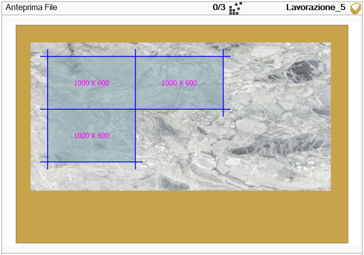
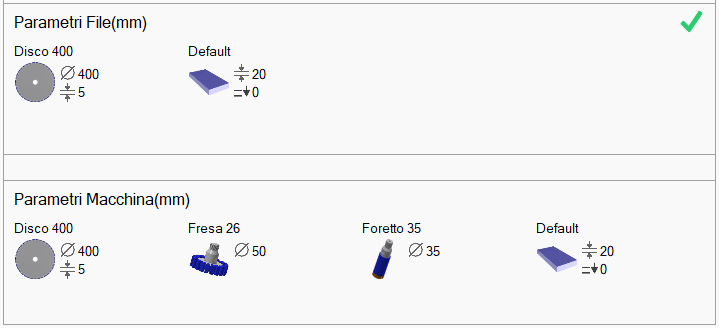
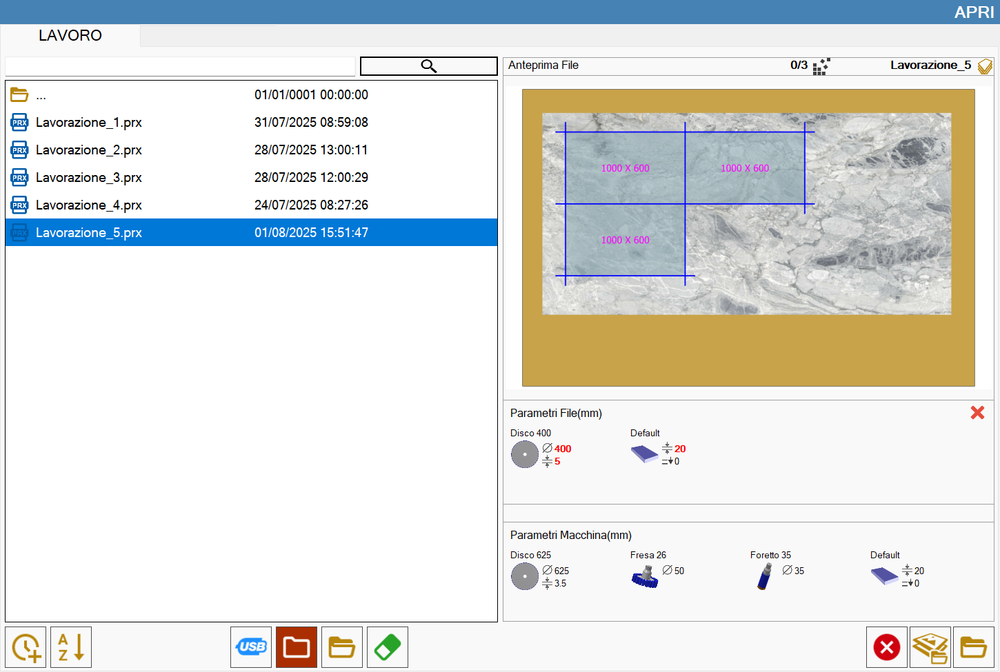
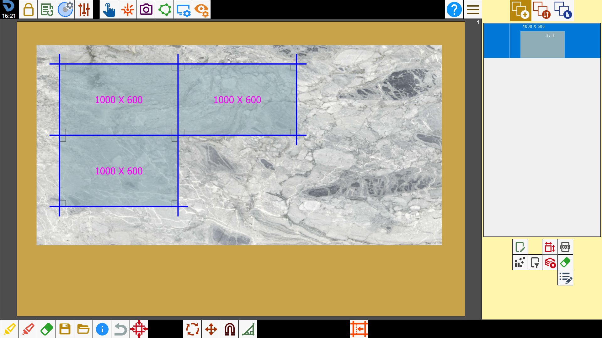
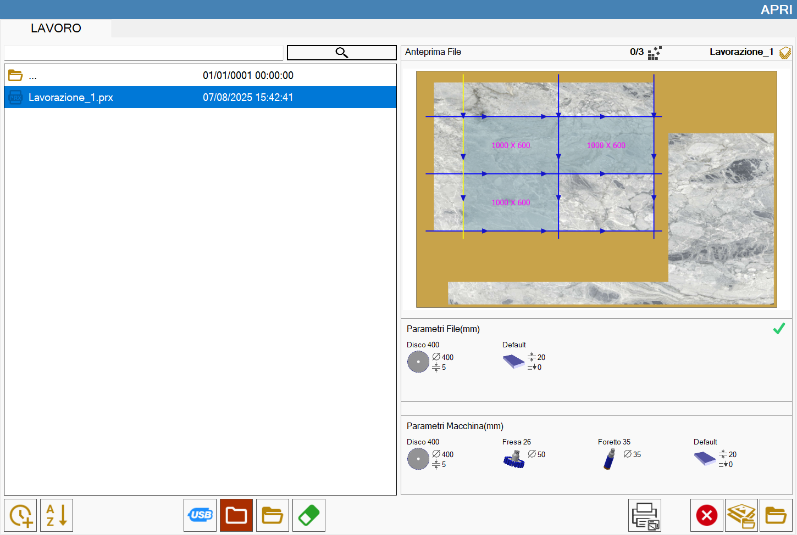
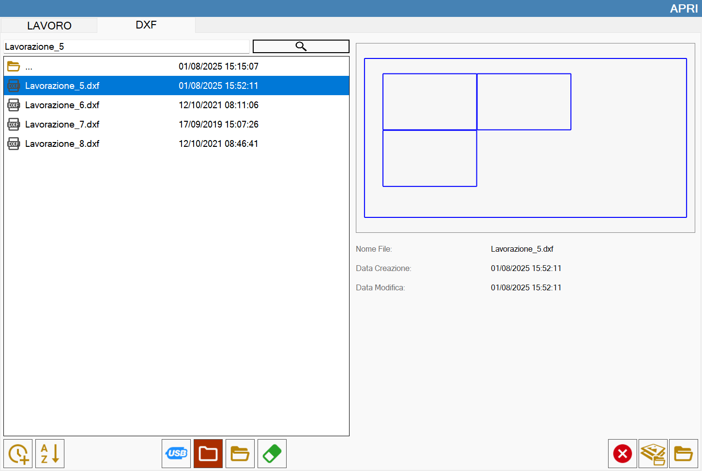

Questa funzione permette di caricare una lavorazione precedentemente salvata su Parametrix.

Lista dei pezzi
Nella sezione di sinistra è collocato l’elenco dei file di stato che è possibile caricare.

Pulsanti
Ordinamento per data | |
Ordinamento per nome | |
 | Memoria USB |
 | Cartella di lavoro |
Esplora cartelle | |
 | Elimina file |
Cerca file |
Anteprima
In questa sezione viene mostrata un’anteprima del file selezionato tra quelli dell’elenco.

Sotto l’anteprima vengono mostrati i parametri della lastra e degli utensili del file selezionato e della macchina, rispettivamente collocati nella sezione superiore ed inferiore.

Per aprire completamente una lavorazione i parametri dei file devono essere identici ai parametri macchina.
In caso contrario, vengono evidenziati in rosso i parametri file diversi da quelli macchina.
Se i parametri non sono uguali la lavorazione si apre in maniera parziale, solo disposizione pezzi. Un messaggio avverte l’utente che le modifiche ai tagli non possono essere eseguite.

Altri pulsanti
 | Slab Matching |
 | Carica stato |
Come caricare uno stato
Dalla pagina principale, accedere al pannello per il caricamento di uno stato.
Quindi, selezionare il file relativo alla lavorazione che si vuole riprodurre.
Dopo la conferma, verranno creati i pezzi ed inseriti all’interno dell’area di lavoro con tutte le operazioni che gli sono state applicate.

Allo stesso modo è possibile caricare una lavorazione programmata precedentemente con tutte le operazioni svolte.

Questa funzionalità viene utilizzata per ricaricare in macchina una lavorazione salvata in precedenza.

Importa DXF (Opzionale)
Questa funzione permette di caricare lo stato di una lavorazione salvata su un file DXF.
